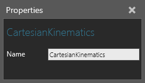

A Cartesian Kinematics behavior calculates the forward and inverse kinematics of a Robot Controller for a Cartesian type robot (gantry, portal, etc.) in which the robot has three transitional joints and an articulated wrist (three rotational joints) defined in this order: Trans X, Trans Y, Trans Z, Rot Z, Rot Y, Rot Z.

In most cases, the Robot Controller using the Cartesian Kinematics is responsible for defining the kinematic nature of the component in a Cartesian space. That is, the kinematic structure of the component and its robot controller's RootNode, FlangeNode, RootOffset and FlangeOffset properties provide the values needed by the kinematics solver. In some cases, you can use Cartesian Kinematics for components that are not robots. For example, a forklift can have Cartesian Kinematics in which a node without any geometry is defined as the RootNode, and the FlangeNode is the node containing the geometry of the forklift.
| Name | Description |
| Name | Defines the name of the kinematics. |